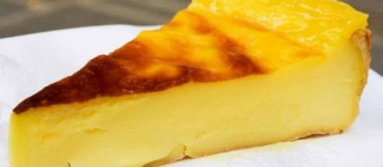

VoorgerechtHoofdgerechtNagerecht
flan
Dis is de oorspronkelijk recept uit Frankrijk. De flan, Parijse Flan is een van de lievelingsrecept van de fransen en ik vond het jammer dat ik hier niet bij de bakker kon vinden. Ik ben dus op franse siten op zoek gegaan naar het juist recept.
Dit is een hele simpel en vooral lekker toetje
ingrediënten
- 1L verse volle melk
- 180g suiker
- 2 zakjes vanillesuiker
- 120 gram maizena
- 2 eieren
- 1 eigeel
bereidingswijze
- Oven op 200 C voorwarmen
- In een kom meng de suiker eieren, eigeel, vanille suiker en maïzena in een kopje melk.
- Breng de rest van de melk in een pan aan de kook.
- Voeg vervolgens gde eerste mengsel (suiker, eieren....) roerend aan de melk in de pan toe (op laag vuur). blijf roeren met een klopper tot dat de mengsel stevig is (zorg ervoor dat het niet aanbrand en klontjes maakt). zet het vuur uit.
- Zet deze mengsel in een taartvorm, een cakevorm is ook goed. (kies je voor de bladendeeg, eerst de bladendeeg op de boden en zijkanten van de vorm aanbrengen)
- Ong 40 min in de oven bakken ( tot dat de bovenlaag lekker (donker) bruin is).
- Laten afkoelen en in de koelkast bewaren

Je kan het beter een dag daarvoor maken, dan is ie helemaal jami jami!